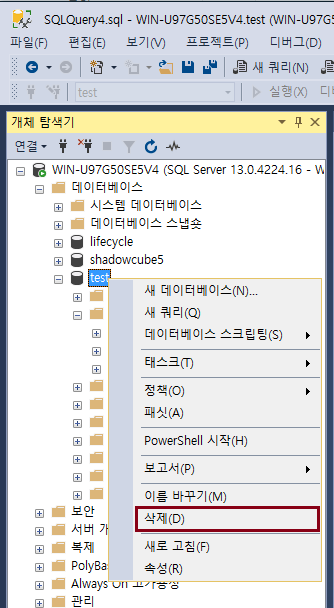
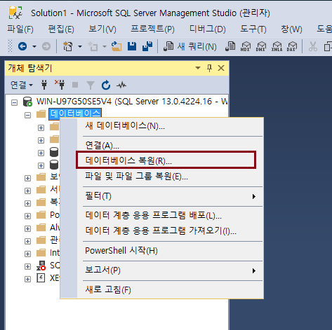
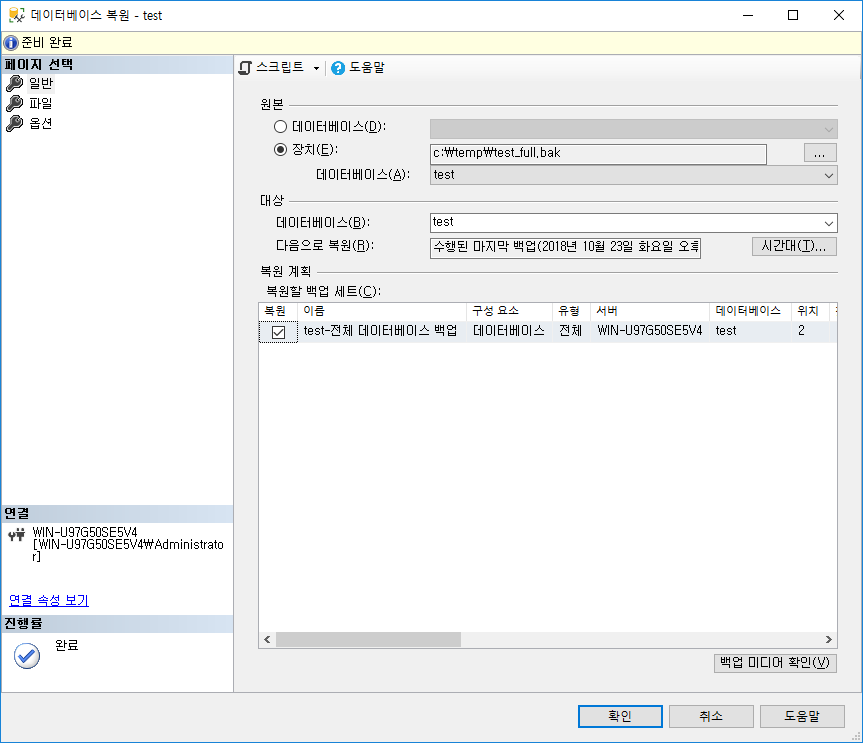
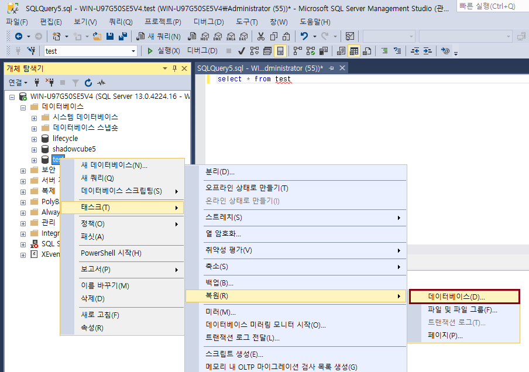
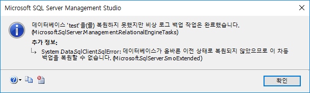
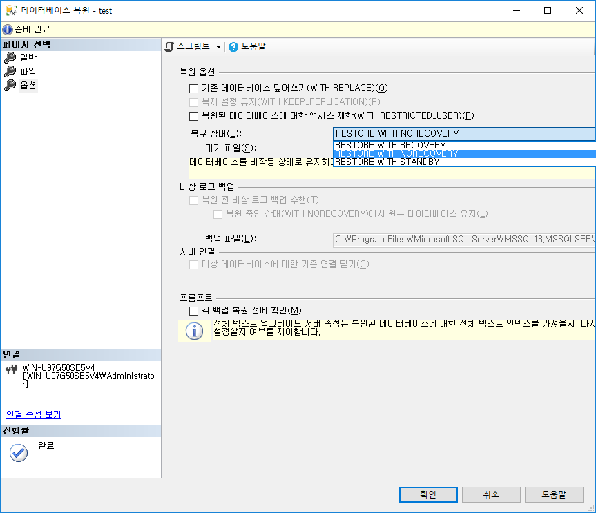
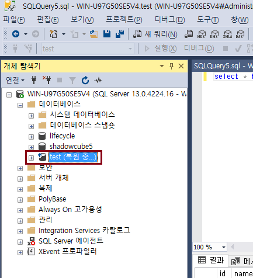
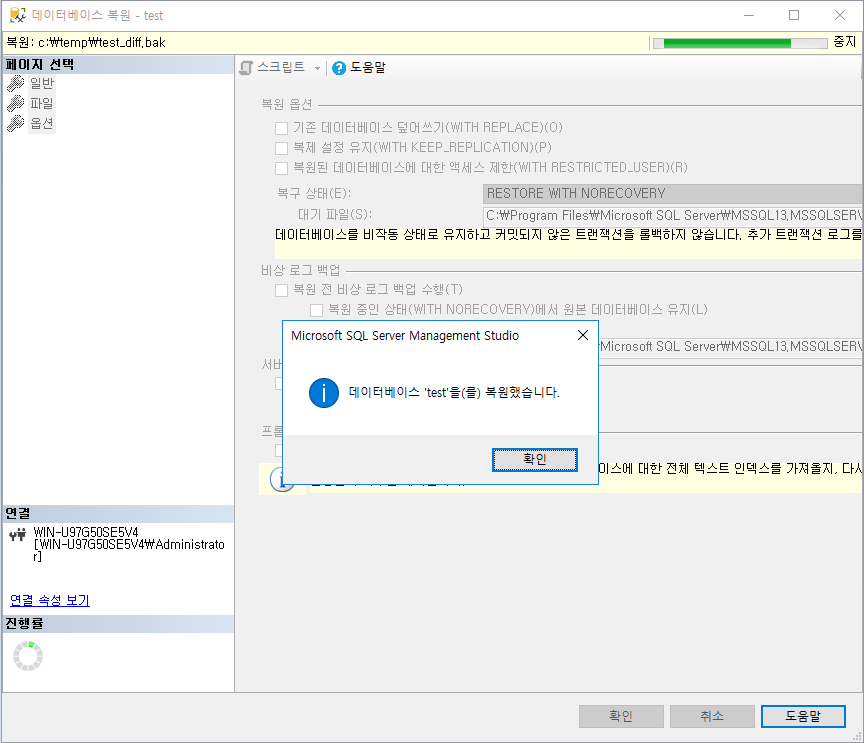

백업과 복원
데이터베이스 복원
SQL Server 복원 옵션
-
Restore With Recovery: 데이터베이스를 복원하는 과정에서 더 이상 복원할 백업 파일이 없는 경우 복원 과정을 마무리하기 위해 사용하는 옵션
-
Restore With NoRecovery: 데이터베이스를 복원 중 상태로 유지하며 추가 트랜잭션 로그를 복원할 수 있는 옵션
데이터베이스 복원 방법
-
test 데이터베이스 삭제

-
데이터베이스 복원

-
장치 선택 (경로 입력) 후 확인

-
test 테이블 조회 (아무것도 없음)
SELECT * FROM test;
-
차등 백업 복원 진행

-
차등 백업 파일 입력 후 복원 진행
-
"데이터베이스가 올바른 이전 상태로.." 차등 백업 에러 발생!

-
데이터베이스 삭제 후 다시 복원 진행 (1번, 2번, 3번 참고)
-
복원 > 옵션 > 복구 상태에서 "Resotre With Norecovery" 선택

-
test 데이터베이스는 "복원 중..." 이라고 표시됨

-
다시 차등 백업 복원 진행 (5번, 6번 참고) 복원 시, 옵션 > 복구 상태에서 "Resotre With Norecovery" 선택

-
트랜잭션 로그 백업파일까지 복원을 진행해 보자. 이때 복원 시, 옵션 > 복구 상태 "Resotre With Recovery" 선택
-
test 테이블을 다시 조회하면 id 가 5번까지 조회될 것이다.
Let's Prcactice
-
Restore With Recovery 복원 옵션이 아직 이해가 안되었다면 계속 반복하여 이해될때까지 백업, 복원 테스트를 해보자.
-
복원 시 에러가 발생했다면, 구글 검색하여 어떤 내용인지 알아보고 스스로 대처해 보자.
-
특정 시점으로 복원하려면 어떻게 해야될까?
처음으로
이전
다음